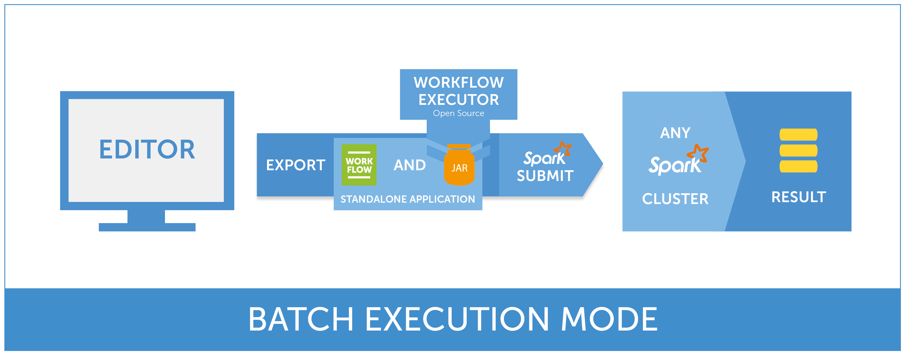

Table of Contents
Production-ready workflows can be exported as standalone Apache Spark applications and executed on any cluster in a batch mode.
Analytical Engine Batch Workflow Executor is an Apache Spark application that allows you to execute standalone workflows. This functionality can facilitate integration of Analytical Engine with other data processing systems and manage the execution of workflows outside of Analytical Engine Editor.
 Analytical Engine Batch Workflow Executor Overview
Analytical Engine Batch Workflow Executor is available in a form of both precompiled binaries and source code.
| Analytical Engine Batch Workflow Executor Version | Apache Spark Version | Scala Version | Link |
| 1.4.2 | 2.1.1 | 2.11 | download |
If you are interested in compiling Analytical Engine Batch Workflow Executor from source you can check out our Git repository:
Analytical Engine Batch Workflow Executor can be submitted to an Apache Spark cluster as any other Apache Spark application. For more detailed information about submitting Apache Spark applications visit https://spark.apache.org/docs/2.0.2/submitting-applications.html
# Run Application Locally (on 8 cores)
./bin/spark-submit \
--driver-class-path workflowexecutor.jar \
--class ai.deepsense.workflowexecutor.WorkflowExecutorApp \
--master local[8] \
--files workflow.json \
workflowexecutor.jar \
--workflow-filename workflow.json \
--output-directory test-output \
--custom-code-executors-path workflowexecutor.jar# Run on Apache Spark Standalone Cluster in Client Deploy Mode
./bin/spark-submit \
--driver-class-path workflowexecutor.jar \
--class ai.deepsense.workflowexecutor.WorkflowExecutorApp \
--master spark://207.184.161.138:7077 \
--files workflow.json \
workflowexecutor.jar \
--workflow-filename workflow.json \
--output-directory test-output \
--custom-code-executors-path workflowexecutor.jar# Run on YARN Cluster
export HADOOP_CONF_DIR=/opt/hadoop/etc/hadoop # location of Hadoop cluster configuration directory
./bin/spark-submit \
--driver-class-path workflowexecutor.jar \
--class ai.deepsense.workflowexecutor.WorkflowExecutorApp \
--master yarn \
--deploy-mode client \
--files workflow.json \
workflowexecutor.jar \
--workflow-filename workflow.json \
--output-directory test-output \
--custom-code-executors-path workflowexecutor.jar# Run on Mesos Cluster
export LIBPROCESS_ADVERTISE_IP={user-machine-IP} # IP addres of user's machine, visible from Mesos cluster
export LIBPROCESS_IP={user-machine-IP} # IP addres of user's machine, visible from Mesos cluster
./bin/spark-submit \
--driver-class-path workflowexecutor.jar \
--class ai.deepsense.workflowexecutor.WorkflowExecutorApp \
--master mesos://207.184.161.138:5050 \
--deploy-mode client \
--supervise \
--files workflow.json \
--conf spark.executor.uri=http://d3kbcqa49mib13.cloudfront.net/spark-2.0.2-bin-hadoop2.7.tgz \
workflowexecutor.jar \
--workflow-filename workflow.json \
--output-directory test-output \
--custom-code-executors-path workflowexecutor.jarOption --custom-code-executors-path is required (workflowexecutor.jar contains PyExecutor and RExecutor).
Option --files workflow.json is necessary to distribute workflow file within the Apache Spark cluster.
It is necessary to pass the same filename to --workflow-filename workflow.json option,
in order to tell Analytical Engine Batch Workflow Executor under which name it should look for a workflow file.
If spark-assembly-2.0.2-hadoop2.7.0.jar is already distributed
on HDFS cluster, it is possible to reduce the time necessary for files propagation on the YARN cluster. Use the spark-submit option
--conf spark.yarn.jar=hdfs:///path/to/spark-assembly-2.0.2-hadoop2.7.0.jar
with a proper HDFS path.
Apache Spark assembly jar can be found in Apache Spark 2.0.2
compiled for Hadoop 2.7.0 package.
NOTE: Paths of files listed in the --files option cannot contain white or special characters.
To allow usage of SQL databases for Read DataFrame and Write DataFrame, a proper JDBC driver has to be accessible during workflow’s execution. This requirement can be satisfied by:
adding the JDBC jar library to cluster deployment, or
adding the JDBC jar to the driver’s classpath during spark-submit command (--jars option).
To specify JDBC jar during execution, use spark-submit’s option
--driver-class-path, e.g. --driver-class-path "path/to/jdbc-driver1.jar:path/to/jdbc-driver2.jar:workflowexecutor.jar".
For more information, please visit
Apache Spark documentation.
To execute workflow containing user-defined operations (see: SDK User Guide), user has to specify jars containing those operation to be accessible during workflow’s execution. This requirement can be satisfied by:
adding the SDK jar to cluster deployment, or
adding the SDK jar to the driver’s classpath during spark-submit command (--jars option).
To specify Analytical Engine SDK jar during execution, use spark-submit’s option
--driver-class-path, e.g. --driver-class-path "path/to/skd1.jar:path/to/sdk2.jar:workflowexecutor.jar".
For more information, please visit
Apache Spark documentation.
Detailed information about command line parameters can be obtained by executing command:
java -classpath workflowexecutor.jar ai.deepsense.workflowexecutor.WorkflowExecutorApp --help
| Argument | Meaning |
|---|---|
-w FILENAME--workflow-filename FILENAME |
Workflow filename. If specified, workflow will be read from passed location. The file has to be accessible by the driver. |
-o DIR--output-directory DIR |
Output directory path. If specified, execution report will be saved to passed location. Directory will be created if it does not exist. |
-e:NAME=VALUE--extra-var:NAME=VALUE |
Extra variable. Sets an extra variable to a specified value. Can be specified multiple times. |
-x PATH--custom-code-executors-path PATH |
Custom code executors (included in workflowexecutor.jar) path. |
--python-binary PATH |
Python binary path. |
-t PATH--temp-dir PATH |
Temporary directory path. |
-w FILENAME (or its long name) needs to be specified.-w FILENAME and -o DIR (or their long names) have to be specified.--extra-var option,
if variable name or value contains special characters (e.g. space),
it has to be surrounded by quotation marks (“”).Depending on Apache Spark application deployment mode and cluster configuration, execution logs can be redirected to several locations, e.g.:
Submitter’s console (running Apache Spark locally or when deploy mode is client)
YARN logs directory on cluster nodes
Apache Spark logs directory on cluster nodes
HDFS directory
For detailed information about logging with regard to your cluster configuration, for running Apache Spark on YARN, visit: https://spark.apache.org/docs/2.0.2/running-on-yarn.html#debugging-your-application, for Apache Spark Standalone cluster, visit: https://spark.apache.org/docs/2.0.2/spark-standalone.html#monitoring-and-logging.
For details on how Apache Spark runs on clusters, visit: https://spark.apache.org/docs/2.0.2/cluster-overview.html.